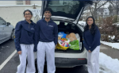
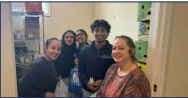
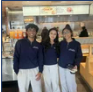
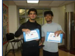
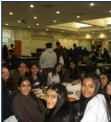

Student-led community service initiative
Project Fresh Foundation
Restoring dignity through hygiene, opportunity, and community.
Our Mission
Hygiene essentials can open the door to confidence, interviews, and stability.
Project Fresh Foundation is a student-led initiative by South Brunswick FBLA dedicated to helping individuals experiencing homelessness by providing hygiene essentials, employment resources, and community support.
About Us
Our Story
Project Fresh Foundation was created after South Brunswick FBLA students saw how homelessness, hygiene insecurity, and employment barriers are connected in daily life. Many people want to attend interviews, apply for jobs, and re-enter the workforce, but they do not always have reliable access to soap, toothpaste, deodorant, razors, wipes, or other basics that help them feel prepared.
In Middlesex County, lack of hygiene access can affect confidence, dignity, and employability. Our project works to remove one barrier at a time by collecting supplies, partnering with shelters and nonprofits, and creating a Career Hub with practical job-readiness resources.
Our Five Goals
- Supply Essential Items: soap, shampoo, toothpaste, toothbrushes, deodorant, feminine hygiene products, razors, and wipes.
- Help Those In Need: distribute supplies directly through shelters and nonprofits.
- Involve the Community: invite students, families, businesses, and volunteers to participate.
- Notify Local Businesses: build support through donations, sponsorships, and outreach.
- Elevate Awareness: teach that hygiene is a basic human need.
The Problem
Homelessness is more than housing. It can affect health, confidence, and employment.
Hygiene insecurity is often invisible, but it can shape how someone is treated in a classroom, workplace, interview, or public space.
1
No Essentials
Without hygiene products, people may struggle to prepare for everyday life.
2
Lower Confidence
Hygiene insecurity can reduce self-esteem and dignity.
3
Interview Barriers
Lack of access to basic care can lead to discrimination or missed opportunities.
4
Community Response
Supplies, support, and career resources help people take the next step.
Sources: Coming Home of Middlesex County 2025 Point-in-Time Count and NJ 2-1-1 2024 statewide homelessness summary.
Our Process
From student research to real community distribution.
Planning
Community research, surveys, business outreach, and shelter communication shaped the project plan.
Fundraising
The Chocolate Bar Fundraiser involved 363 students and raised $22,390 in revenue, creating $9,960 in profit. A Chipotle fundraiser added community partnership funding.
Donation Drive
Multiple collection events brought in 750+ donated products through student, family, and community participation.
Distribution
Garden State Home, GreenDrop, and 20+ shelters helped deliver 654 hygiene items to people who needed them.
Career Hub
The website connects visitors with resume help, interview tips, job listings, workforce development, financial assistance, and community resources.
Partners
Community partners helped turn a student idea into delivered impact.
Garden State Home
Supported distribution and helped connect hygiene supplies with individuals and families.
GreenDrop
Assisted with donation logistics and collection support for community items.
Chipotle
Hosted a fundraiser that brought families, students, and community members together.
Panera Bread
Supported outreach conversations and local business engagement.
Beauty Brands Contacted
Outreach focused on securing personal care products, sponsorships, and awareness.
Local Schools
Students and school communities donated items, volunteered, and promoted the initiative.
Coming Home of Middlesex County
Provided local context on homelessness and service needs across Middlesex County.
Community Impact
Numbers matter because each item can support a real person’s next step.
Project Fresh Foundation restores dignity by making everyday hygiene more accessible. The initiative also helps families, strengthens community awareness, develops student leadership, and creates a sustainable model for future donation drives and resource partnerships.
Career Hub
Employment resources for people preparing for interviews, applications, and work.
Resume Help
- Download a simple resume template
- Use action verbs and clear dates.
- List volunteer work, school projects, and transferable skills.
Interview Preparation
- Wear clean, comfortable clothing that fits the workplace.
- Practice answers to common questions about experience, strengths, and availability.
- Arrive early, make eye contact, and thank the interviewer.
Job Search
- Indeed
- LinkedIn Jobs
- NJ Workforce Development
- Ask local employers about entry-level roles and flexible scheduling.
Resources
- Financial assistance and benefits navigation
- Housing resources and shelter referrals
- Workforce development programs
- Community organizations and transportation help
Get Involved
Join the effort to collect, fund, and deliver hygiene products.
Gallery
Donation drives, fundraisers, shelter deliveries, volunteers, and community events.





News & Media
Spreading awareness online, in school, and across the community.
TikTok Campaign
Short-form videos promoted donation needs and student volunteer opportunities.
Instagram Posts
Social posts highlighted drives, partner updates, and impact milestones.
Viking Vibe Feature
School media recognized the initiative and encouraged more students to join.
Patch NJ Article
Local news coverage helped bring the project to a wider audience.
Principal Recognition
School leadership celebrated the service, fundraising, and student leadership behind the work.
Meet the Team
South Brunswick FBLA students leading with service.
President
Guides the project vision, partner communication, and chapter coordination.
Executive Vice President
Supports logistics, donation tracking, and event execution.
Executive Membership
Organizes volunteers and encourages student participation.
Secretary
Documents meetings, outreach progress, donations, and impact updates.
FAQ
Common questions about donations, volunteering, and partners.
Where do donations go?
Donations are distributed through shelters, nonprofit partners, and community organizations serving people experiencing homelessness.
How can I volunteer?
Students and community members can help with collection drives, sorting, packing, outreach, and delivery events.
What items are accepted?
Accepted items include soap, shampoo, toothpaste, toothbrushes, deodorant, razors, wipes, and feminine hygiene products. New, unopened items are preferred.
Can businesses partner with us?
Yes. Businesses can sponsor a drive, donate products, provide funding, host a fundraiser, or share employment resources.
Who receives the donations?
Individuals and families experiencing homelessness receive donations through trusted shelters and community organizations.
Contact
Reach out to donate, volunteer, host a drive, or partner with Project Fresh Foundation.
Email: projectfreshfoundation@example.com
Social Media: @projectfreshfoundation
Chapter: South Brunswick FBLA